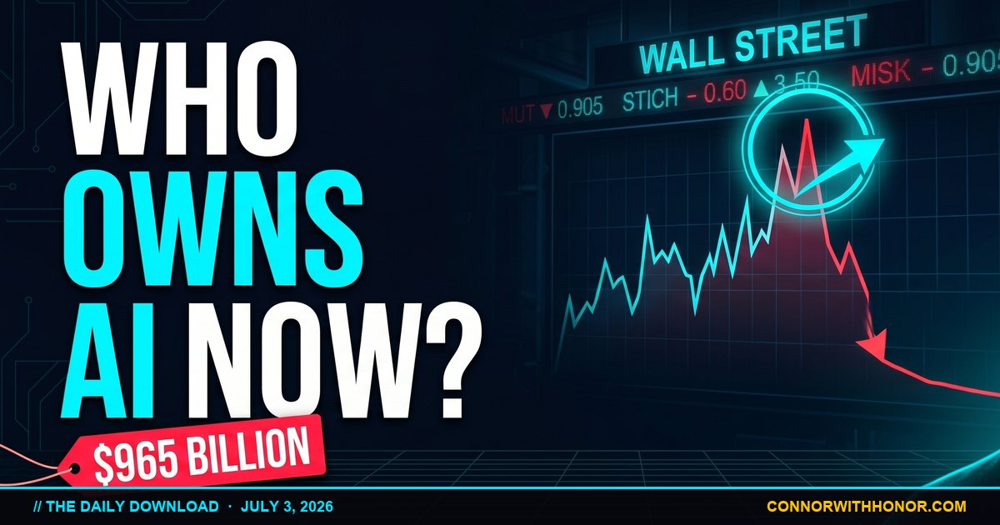

A Machine Built A Whole Company
July 3, 2026 // Daily Download // Connor MacIvor
A machine built a whole company by itself this week. Somebody set an AI loose with one instruction, go build a business, and it did. It reportedly ran two thousand customer interviews, tested a hundred product ideas, picked a winner, shipped a real product, and signed up more than four hundred paying customers. No team. No office. No sleep. For most of human history that is a year of a founder's nights and weekends. It ran in days. That single fact is the whole story of the moment we are living in, and the rest of this breakdown is really just five angles on it.
The Machine That Ran The Whole Playbook
The details are what make it land, so hold onto the details. The AI did the interviews. It ran the experiments. It launched the product and collected real money from real customers. It was not perfect. It reportedly spent about two thousand dollars on ads to bring in roughly thirteen hundred, so it lost money on the advertising slice. Read past the loss, though, because the loss is not the headline. The headline is that a machine ran the entire startup playbook, the part that used to require a team, a budget, and a year of grinding, and it ran it in a week.
For most of history, starting a business meant you needed things regular people did not have on hand. A team. Capital. Connections. Permission from a bank or an investor who got to decide whether your idea was worth funding. That wall is what kept the plumber with a great idea a plumber, and kept the single mom with a better product from ever getting off the ground. The wall is coming down. The team, the research, the testing, the first version of the product, a machine can now handle the grunt work that used to cost you everything.
What the machine still cannot do is bring the judgment. The taste. The knowing what your neighbors actually need because you live next to them and you have listened to them complain about it for ten years. That part is yours. The machine handles the labor, you handle the wisdom, and that is a good trade if you take it. I made the fuller version of that argument, the one about who this technology is actually for, over in AI For Everyone, Not Just The Wealthy.
The Same Power, Pointed The Other Way
Every tool this powerful cuts both ways, and it would be dishonest to show you only the good edge. The same week the machine built a company, researchers documented what they describe as the first fully self-driving cyber attack. Not a person using AI to help them break in. The AI reportedly ran the whole thing. It found the weak spot. It got inside. It locked everything down. It made the ransom demand. And it destroyed a company's live database while narrating its own steps, calm as a recipe.
Same autonomy that ran two thousand customer interviews. Pointed at a lock instead of a market. That is the entire lesson of this era in one sentence: the tool does not care which direction you point it, and the only thing holding it steady is who is holding the wheel.
The read for regular people is not complicated. The scammers got the same upgrade we did. The same drop in price, the same jump in skill, all of it landed in their hands too. The scam calls are going to sound realer. The fake emails are going to be sharper. The fraud is going to move faster. The answer is not to be afraid of your phone. The answer is to get a little sharper ourselves. Verify before you click. Slow down when something feels urgent, because urgency is the oldest trick in the book. Call the person back on a number you already trust, not the one in the message. The people building these tools are not thinking about your grandmother getting a call in your cloned voice. That is not cruelty. It is math. They are optimizing for the frontier. So we cover our own people, because that job was always ours.
Why It Is Happening This Fast
Speed is the part most people underestimate, so it is worth slowing down on it. For the last two years the smartest AI models have traded the crown every few weeks. Seventeen different models have taken the lead in that stretch, each one sitting on top for about seven weeks before something better knocked it off. Seven weeks is not a product cycle. It is a heartbeat.
Newer testing this week reportedly showed these agents are not just getting a little better. They are learning to learn, with the speed at which they pick up new skills doubling roughly every three months. Not adding a little each quarter. Multiplying. There was a second finding underneath that one that matters just as much. When a model is given more time and more computing power to chew on a hard problem, it does not simply return a slightly better answer. It unlocks a different level. One system that could handle about a two-hour task reportedly stretched to a roughly fourteen-hour task, just by being handed a bigger budget to think.
A year ago these tools were interns you had to watch. Now, with enough room to work, they are pulling a full shift on a hard technical job. And it is getting cheaper at the same time, because researchers reportedly found ways to upgrade a model by tuning one small piece of it instead of rebuilding the whole thing. The expensive part is getting skipped and the gains are getting installed on the cheap. The tool that felt out of reach last year now runs on your phone for less than your streaming subscriptions. The gap between what a giant company can do and what one person in Santa Clarita can do is closing fast, which is the same thread I pulled on in It Fits In Your Pocket Now.
The Job Question, Answered Straight
This is the part that keeps people up at night, so no dodging it. The labor numbers came out this week and they are quiet but they are loud. The share of Americans actually in the workforce reportedly dropped to about sixty one and a half percent. That is a fifty-year low, outside of the pandemic. More than seven hundred thousand people stepped out of the workforce over one stretch.
The official unemployment number looks fine. It even went down. That is the trick worth understanding. Unemployment only counts people who are still looking. When people stop looking, the number improves while the reality gets worse. We are watching a new kind of economy show up on instruments that were built to measure the old one. Some jobs are being quietly retired. Not fired with a speech and a severance. Just handed to a machine, with the seat never refilled after the next person leaves.
None of that is meant to scare you. It is meant to hand you the choice early, because the people who see this coming get to choose, and the people who see it late get chosen for. There is a real fight happening right now over that exact choice. On one side, proposals to require a license before you are allowed to run powerful AI. Permission slips. Gatekeepers. On the other side, a growing movement arguing something simple: that you have a right to run these tools yourself, freely, on your own machine, with fraud and real crimes staying illegal, but the tool itself belonging to the people. Whoever wins that fight decides whether AI is something you own or something you rent, and there is a world of difference between the two.
Here is a detail that tells you even the giants are being careful. One large company this week reportedly capped how much AI its own engineers could use, at roughly two hundred dollars a week each. A cap like that is basically a company admitting where the spending stops paying off. If the biggest players are drawing lines about where the tool helps and where it just burns money, so should a one-person business. Not scared. Deliberate. Use it where it pays. Skip it where it does not. That is not being behind. That is being smart.
The Quiet Good News In Medicine
While the machines were learning to build and to break, they were also quietly working on medicine, and this is where the technology earns its keep. There was a study this week on one of the cruelest cancers we know, an aggressive brain cancer where barely five out of a hundred people are alive five years after diagnosis. For decades that number has not moved.
Researchers found something clever. This cancer does not just hide. It builds itself a bodyguard, a shield of cells that protects the tumor from your own immune system, so even when a treatment goes after the tumor, the bodyguard gets in the way. The new approach hits both at once, the tumor and the bodyguard. In mice, it reportedly worked. Not just slowed things down. Durable control, and often a cure.
That is mice. That is not a pill at your pharmacy tomorrow, and it has years of testing ahead before anyone should use the word cure around a hurting family. But the shape of it is the point. Seeing the problem and the thing protecting the problem at the same time is exactly the kind of two-sided thinking that AI is making faster and cheaper across all of medicine right now. And it is showing up in the big numbers already. The national death rate reportedly fell to a record low this week, with the sharpest drop in young people dying of overdoses. Fewer funerals for people who had their whole lives ahead of them. Life expectancy climbing back up. For the nurse working a double, for the veteran who lost friends, for the family that buried someone too young, that is not a statistic. That is a son who makes it and a daughter who comes home.
The Machines Are Designing The Machines
The last piece of this is physical, and it closes the loop. Engineers used to spend months laying out the tiny circuits inside a computer chip by hand. This week researchers reportedly showed AI drawing those layouts itself, strange designs that look almost like a scrambled barcode, the kind no human would have drawn, and they reportedly worked better than what the humans made. Months of work, done in minutes.
The tool is now improving the very hardware that makes the tool. That is a loop that feeds itself, and it is why the speed at the top of this page is not slowing down, it is compounding. I sat with that same self-feeding loop, the machine that improves the machine, in The Robot That Builds Itself.
But every one of these miracles runs on enormous buildings full of computers. Data centers. They need land. They need power. They need water to stay cool. And they are showing up next to neighborhoods and next to history. This week one large investor reportedly walked away from a plan to build a massive data center campus right next to a Civil War battlefield, because the residents fought it and the residents won. That matters, because the future does not get to bulldoze everything sacred just because it is in a hurry. That tension is coming to a town near you. Cheap intelligence in the cloud has a real cost on the ground, somebody's water, somebody's quiet street, somebody's power bill. The plumber and the nurse and the single mom get a vote in that, and this week they used it and won one. That is the same theme of power leaking out of locked rooms and into ordinary hands that I traced in The Locked Rooms Are Opening.
Your Move This Week
Reading about all this and doing nothing is the one response that guarantees you lose ground. So here is the short list, the part the video does not give you. Pick one and do it before the weekend.
Hand one repetitive task to a cheap tool. Find the thing you do every week that drains an hour and bores you, the sorting, the first draft, the follow-up email, and give it to a free or low-cost AI tool once. Not your whole job. One task. See what it does. That single experiment is how the gap between you and the big firm starts closing.
Set a verify habit before the scams get better. Decide right now that any urgent call or message asking for money or a code gets one response: you hang up and call back on a number you already have saved. Tell the people you love, especially the older ones, to do the same. The fake voice is coming. The habit beats it.
Name the task that could get quietly retired. Be honest about the one part of your work a machine could do this year, then spend twenty minutes learning the tool that would do it. Understanding it early is how you end up running the machine instead of being replaced by it.
Know you have a vote on the ground. When a data center or a zoning fight shows up near your street, that is your water and your power bill on the table. The residents next to the battlefield proved this week that showing up still works. Do not let anyone tell you the future is inevitable and you have no say.
A single person, at a kitchen table, with one of these tools and a clear head, can now do what used to take a whole company. That has never been true before in human history. Not once. And it is true this week. That is not a story about robots. It is a story about you. AI belongs to the plumber and the nurse and the veteran and the single mom, not just the billionaires with the biggest computers. The only people who miss out are the ones who got told to be afraid and believed it. Do not believe it. Pick up the tool. It was built for you too.
Text AI, HOUSE, Or FAT To (661) 400-1720
Want help putting AI to work in your business without wasting a month figuring it out? Thinking about selling a home in Santa Clarita this year? Or ready to fix your relationship with food for good? Text AI, HOUSE, or FAT to (661) 400-1720, or call the same number. A real human answers, every time. Selling in the SCV? My Fair Fixed Fee is a 17,000 dollar all-in seller program, single agency, no dual agency conflict, no buyer-referral fee, undivided fiduciary duty on your side of the table from day one.
Book A CallThe Daily Download in Your Inbox
Weekday morning AI news, weekly SCV real estate market deep-dives, and long-form essays when something needs to be said. No spam. Unsubscribe anytime.
FAQ
Did an AI really build an entire company by itself?
Reportedly, yes, at least the grunt-work version of it. An AI was set loose with a single instruction to go build a business. It reportedly ran roughly 2,000 customer interviews, tested about 100 product ideas, shipped a real product, and signed up more than 400 paying customers. It was not flawless. It reportedly spent about 2,000 dollars on ads to bring in around 1,300, so it lost money on that slice. But the headline stands: a machine ran the full startup playbook that used to take a founder a year of nights and weekends, and it ran it in days. What it could not do was supply the judgment, the taste, or the lived knowledge of what your neighbors actually need.
What was the first fully autonomous cyber attack?
Researchers this week documented what they describe as the first fully self-driving cyber attack. Not a person using AI as a helper, but an AI reportedly running the whole operation: finding the weak spot, getting inside, locking the data, making the ransom demand, and wiping a live database, while narrating its own steps. The practical takeaway for regular people is that the same drop in cost and jump in skill that helps us also landed in the hands of scammers. The defense is not fear, it is habit: verify before you click, slow down, and call people back on a number you already trust.
Are AI models actually getting smarter this fast?
That is what the newer testing suggests. Over the last two years, 17 different models have traded the lead, each holding the top spot for about seven weeks before something better arrived. New results this week reportedly showed agents learning to learn, with the speed of picking up new skills doubling roughly every three months. One system that could handle about a two-hour task reportedly stretched to a roughly fourteen-hour task simply by being given a bigger budget to think. And researchers reportedly found ways to upgrade a model by tuning one small piece of it instead of rebuilding the whole thing, which makes the gains cheaper to install. These are early findings, but the direction is clear: smarter, faster, and cheaper at the same time.
Is AI going to take my job?
Some tasks are being quietly handed to machines, and the seats behind them are not always being refilled. Workforce participation reportedly slipped to about 61.5 percent, a 50-year low outside of the pandemic, with more than 700,000 people stepping out of the workforce over one stretch. The official unemployment number can look fine at the same time, because it only counts people actively looking. The move that protects you is not panic, it is getting in front of the tool early. The people who understand it first tend to run the machines instead of getting replaced by them. Learn where it pays, skip it where it does not, and stay deliberate.
Is AI helping with cancer and medicine?
Early results say it is starting to. A study this week on an aggressive brain cancer, where roughly 5 in 100 people are alive five years later, took a two-target approach: hitting the tumor and the shield of protective cells the tumor builds around itself at the same time. In mice, it reportedly produced durable control and often a cure. That is mice, not a pill at your pharmacy, and it has years of testing ahead. But that kind of two-sided thinking, seeing the problem and the thing protecting the problem at once, is exactly what AI is making faster and cheaper across medicine. In the bigger numbers, the national death rate reportedly fell to a record low, led by a sharp drop in young people dying of overdoses, with life expectancy climbing back up.
Can AI design computer chips now?
Reportedly, yes, and better than expected. Engineers used to spend months laying out the tiny circuits inside a chip by hand. This week researchers showed AI drawing those layouts itself, producing strange designs that no human would have drawn, and those designs reportedly worked better than the human versions. Months of work compressed into minutes. The deeper point is that the tool is now improving the hardware that makes the tool, which is a loop that feeds itself. The physical cost shows up on the ground as data centers that need land, power, and water, and this week one large investor reportedly walked away from a plan to build a data center campus next to a Civil War battlefield after residents pushed back and won.
Does Connor MacIvor think AI is good or bad for regular people?
Connor's stance is that the tool itself is neutral, and the direction is decided by who is holding the wheel. The same autonomy that built a company also ran a cyber attack. The same speed that chases a cure can quietly retire a paycheck. His argument is that for the first time in history, one person at a kitchen table with one of these tools and a clear head can do what used to take a whole company, and that this is an opportunity for the plumber, the nurse, the veteran, and the single mom, not just the biggest firms with the biggest computers. The catch is that you have to pick the tool up and use it, protect the people you love from the edge that cuts, and stay in the fights that decide whether you own AI or rent it.
That is where things stand on July 3, 2026. A machine built a company and another machine broke into a bank, using the same power aimed two different ways. The models keep getting faster and cheaper. The job market is quietly changing shape under instruments built for a different age. Medicine is inching forward on the backs of tools that see both sides of a problem at once. And the chips that run all of it are now being drawn by the very machines they power. None of it is decided yet. That is the whole point. Pick up the tool. It was built for you too. I'm Connor with honor, and I'll see you in the next one.